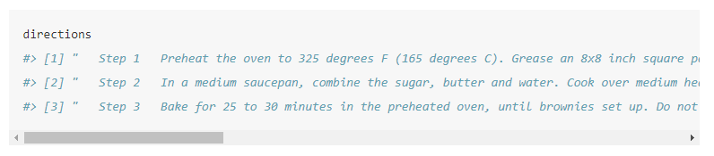
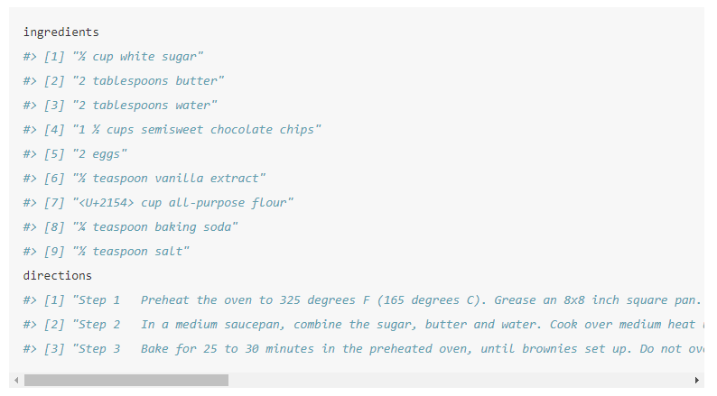
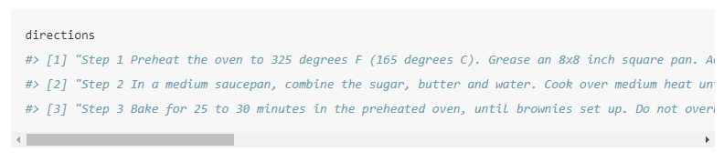

19 Webscraping with rvest
If I ever stop working in the field of criminology, I would certainly be a baker. So for the next few chapters we are going to work with “data” on baking. What we’ll learn to do is find a recipe from the website All Recipes and webscrape the ingredients and directions of that recipe.20
For our purposes we will be using the package rvest. This package makes it relatively easy to scrape data from websites, especially when that data is already in a table on the page as our data will be.
If you haven’t done so before, make sure to install rvest.
install.packages("rvest")And every time you start R, if you want to use rvest you must tell R so by using library(rvest).
library(rvest)
#
# Attaching package: 'rvest'
# The following object is masked from 'package:readr':
#
# guess_encodingHere is a screenshot of the recipe for the “MMMMM… Brownies” (an excellent brownies recipe) page.


19.1 Scraping one page
In later lessons we’ll learn how to scrape the ingredients of any recipe on the site. For now, we’ll focus on just getting data for our brownies recipe.
The first step to scraping a page is to read in that page’s information to R using the function read_html() from the rvest package. The input for the () is the URL of the page we want to scrape. In a later lesson, we will manipulate this URL to be able to scrape data from many pages.
# {html_document}
# <html id="recipeScTemplate_1-0" class="comp no-js taxlevel-5 recipeScTemplate html mntl-html" data-ab="99,79,99,72,99,99,99,99" data-resource-version="1.35.0" lang="en" data-mantle-resource-version="3.13.678" data-allrecipes-resource-version="1.35.0" data-tracking-container="true">
# [1] <head class="loc head">\n<meta http-equiv="Content-Type" content="text/html; charset=UTF-8">\n<scr ...
# [2] <body>\n<svg class="mntl-svg-resource is-hidden"><defs><symbol id="icon-chevron_right"><svg viewbo ...
When running the above code, it returns an XML Document. The rvest package is well suited for interpreting this and turning it into something we already know how to work with. To be able to work on this data, we need to assign the output of read_html() to an object, which we’ll call brownies since that is the recipe we are currently scraping.
brownies <- read_html("https://www.allrecipes.com/recipe/25080/mmmmm-brownies/")We now need to select only a small part of the page that has the relevant information - in this case, the ingredients and directions.
We need to find just which parts of the page to scrape. To do so we’ll use the helper tool SelectorGadget, a Google Chrome extension that lets you click on parts of the page to get the CSS selector code that we’ll use. Install that extension in Chrome and go to the brownie recipe page.
When you open SelectorGadget it allows you to click on parts of the page, and it will highlight every similar piece and show the CSS selector code in the box near the bottom. Here we clicked on the first ingredient - “1/2 cup white sugar.” Every ingredient is highlighted in yellow as (to oversimplify this explanation) these ingredients are the same “type” in the page.

Note that in the bottom right of the screen, the SelectorGadget bar now has the text “.ingredients-item-name”. This is the CSS selector code we can use to get all of the ingredients.

We will use the function html_nodes() to grab the part of the page (based on the CSS selectors) that we want. The input for this function is first the object made from read_html() (which we called brownies) and then we can paste the CSS selector text - in this case, “.ingredients-item-name”. We’ll assign the resulting object to ingredients since we want to use brownies to also get the directions.
ingredients <- html_nodes(brownies, ".ingredients-item-name")Since we are getting data that is a text format, we need to tell rvest that the format of the scraped data is text. We do with using html_text() and our input in the () is the object made in the function html_nodes().
ingredients <- html_text(ingredients)Now let’s check what we got.
ingredients
# character(0)We have successfully scraped the ingredients for this brownies recipes.
Now let’s do the same process to get the directions for baking.
In SelectorGadget click clear to unselect the ingredients. Now click one of the lines of directions that starts with the word “Step”. It’ll highlight all three directions as they’re all of the same “type”.21 Note that if you click on the instructions without starting on one of the “Step” lines, such as clicking on the actual instructions (e.g. “Preheat the oven…”) lines itself, SelectorGadget will have the node “p” and say it has found 25 “things” on that page that match. To fix this you just scroll up to see where the text “Best brownies I’ve ever had!” is also highlighted in yellow and click that to unselect it. Using SelectorGadget is often steps like this where you use trial and error to only select the parts of the page that you want.

The CSS selector code this time is “.instructions-section-item” so we can put that inside of html_nodes(). Let’s assign the output as directions.
directions <- html_nodes(brownies, ".instructions-section-item")
directions <- html_text(directions)Did it work?
directions
Yes! You may notice that each direction is one very long string, so long that we have to scroll to the right (in the web version of this book) to read it. If you run the code direction in RStudio, it’ll automatically put it on multiple lines for easy reading. If you put it on a website or a PDF, it’ll instead be so long that it may extend off the page. There are many features in RStudio that make it easy to work with data like this. In cases where you are presenting the data outside of RStudio, such as making an R Markdown document, it is important to check that the results look right in every format you are making (e.g. Word, HTML, PDF).
19.2 Cleaning the webscraped data
Now we just need to clean up the extra spaces to have nice, clean instructions to make the brownies from the recipe we scraped. We can remove white space at the beginning or end of strings using the trimws() function that is built into R. We just put the vector object inside the parentheses.
directions <- trimws(directions)
ingredients <- trimws(ingredients)And let’s print out both objects to make sure it worked.
ingredients
directions
Now ingredients is as it should be, though note that all of the ingredient amounts - e.g. 2/3 cups - looks fine when in R. But when exporting it to PDF or HTML it shows weird characters like “<U+2154>.” This is because the conversion from R to PDF or HTML isn’t working right. I’m keeping this unfixed as a demonstration of how things can look right in R but look wrong when moving it elsewhere. So when working on something that you export out of R (including from R to PDF/HTML or even R to Excel), you should make sure to check that no issue occurred during the conversion.
directions has a bunch of space between the step number and the instructions. Let’s use gsub() to remove the multiple spaces and replace it with a single space.
We’ll search for anything with two or more spaces and replace that with a single space.
directions <- gsub(" {2,}", " ", directions)And one final check to make sure it worked.
directions
In Chapter 20 we’ll learn to make a function to scrape any recipe from this site using just the URL and to print the ingredients and directions to the console.
The recipe was submitted by the user cicada77.↩︎
To be slightly more specific, when the site is made it has to put all of the pieces of the site together, such as links, photos, the section on ingredients, the section on directions, the section on reviews. So in this case we selected a “text” type in the section on directions and SelectorGadget then selected all “text” types inside of that section.↩︎